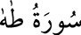

<a name=4908></a><br/>
<b>20-TÂHÂ SÛRESİ</b><br/>
<i><b>Yüz otuz beş âyettir. Mekke’de nâzil olmuştur. Sûre, ismini, başındaki Tâ-Hâ</b></i><br/>
<i><b>harflerinden almıştır. Hz. Ömer (r.a.)’ın bu sûre vesîlesiyle müslüman olduğu<br/>rivâyeti de vardır.</b></i><br/>
